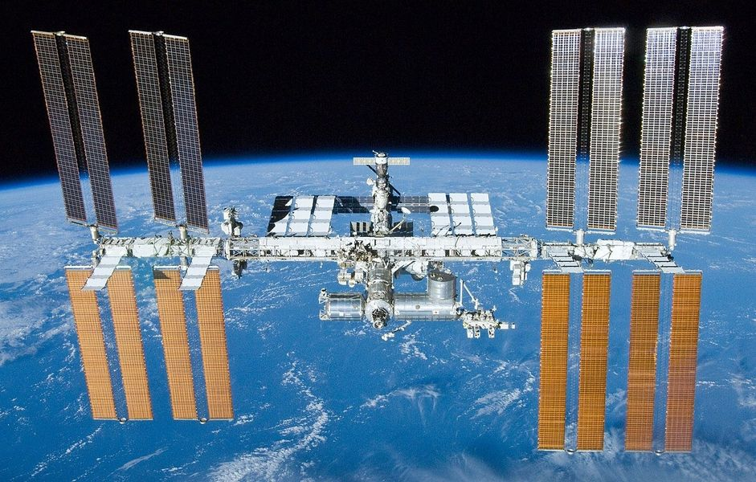
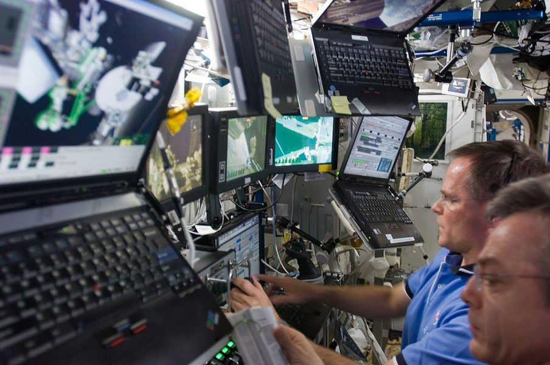
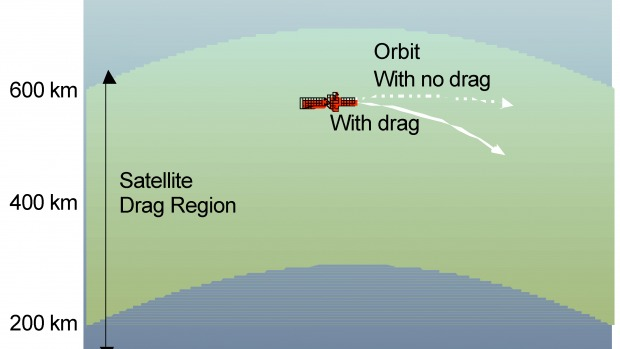
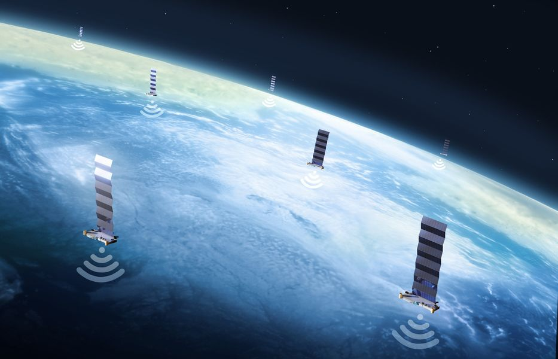
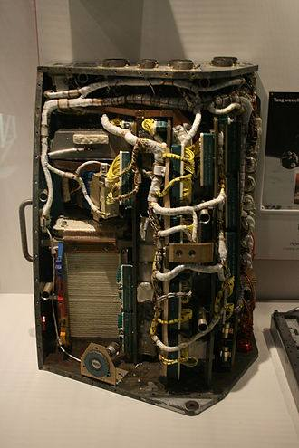
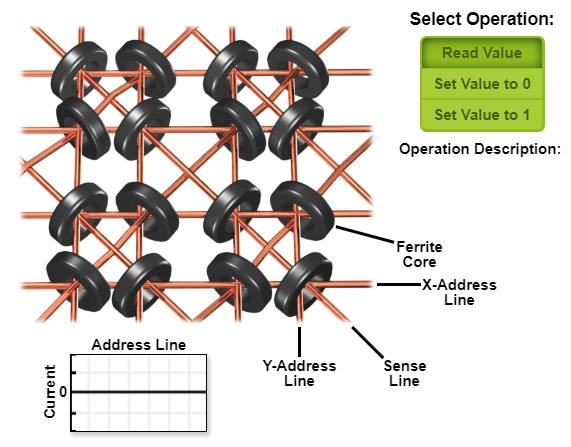
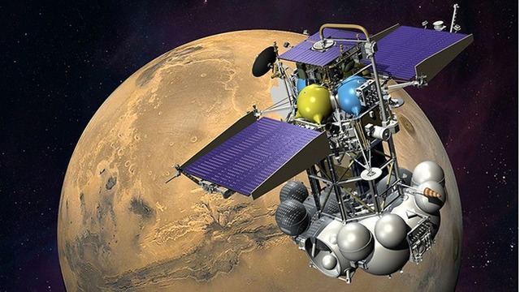
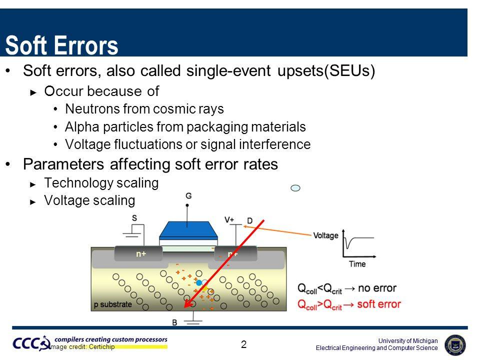
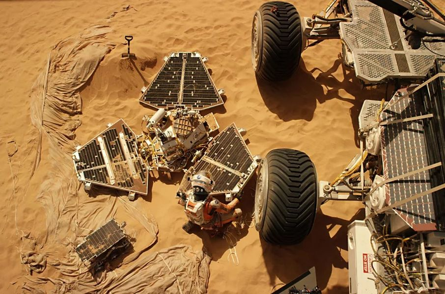
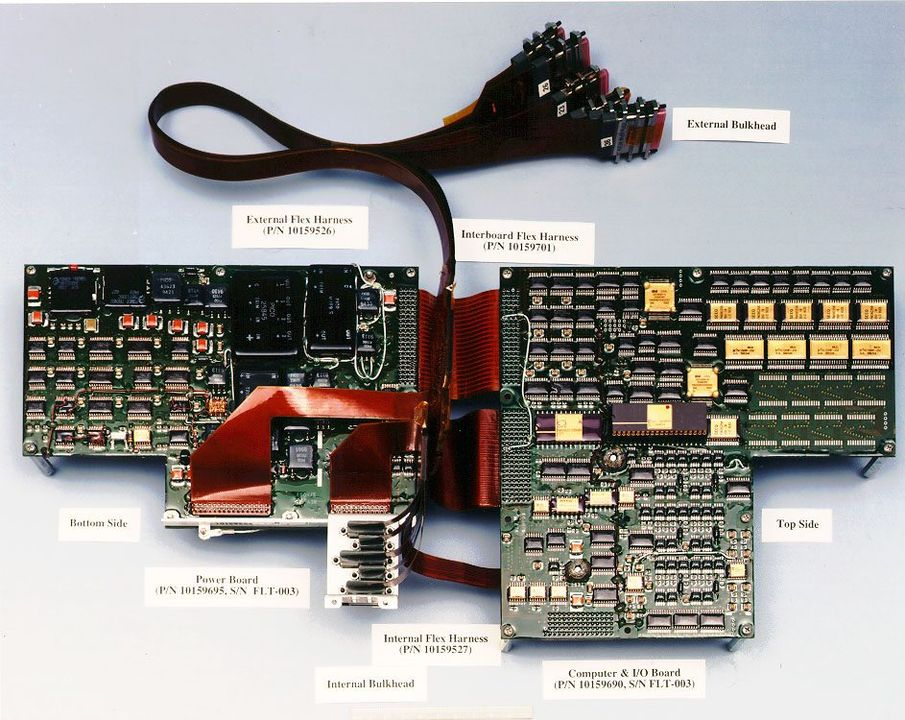

우주로 간 프로세서들 - 방사선과의 싸움
게시: 2022-07-21T06:30:51+09:00
<인공위성에 엄청 큰 태양광 패널을 달면 안되나?> 인공위성은 전력 측면에서 항상 가난하다는 말이 언듯 이해가 안갈 수 있음. 우주에는 엄청난 강도의 태양광이 쏟아지는데 구름도 없으니 태양광 발전에 최적의 환경. 그러니 그냥 태양광 패널을 활짝 펼치면 전기는 공짜로 얼마든지 만들어낼 수 있는 것 아닌가? 실제로 많은 위성들이 좌우로 긴 태양광 패널을 날개퍼럼 달고 있음. 가장 큰 태양광 패널을 달고 있는 것은 역시 가장 큰 인공위성이라고 할 수 있는 국제 우주정거장 ISS (International Space Station, 사진1)는 총 4장의 태양광 패널 날개를 달고 있는데, 각각의 넓이는 375 제곱미터에 달하고, 여기서 총 75~90 kW의 전력을 생산함. 이런 풍부한 전력을 이용하여 ISS 상에는 약 100여대의 각종 laptop 컴퓨터를 운용 중 (사진2).
 
그런 식으로 spy SAR 위성에도 댑따 큰 태양광 패널을 달아서 전력 생산하고, 그걸로 고성능 GPU를 운용하면 지금 위성이 보고 있는 물체가 항공모함인지 유조선인지 거의 실시간으로 볼 수 있지 않을까? 불가능하지는 않지만 너무나 비효율적임. 이유는 drag이라는 현상 때문. <인공위성이 공기 저항을 받는다고?> 의외로 인공위성도 공기 저항(drag)을 받음. 물론 대기권에서의 공기 저항에 비하면 턱도 없이 작은 양이지만, 지구 저궤도(Low Earth orbit, LEO)인 600km 정도까지도 의외로 무시못할 정도의 drag이 있음. (사진1) 그리고 지구와의 통신, 그리고 레이더 빔 조사의 강도 때문에 많은 위성들, 특히 스파이 위성은 저궤도에서 활동함. 가령 엘론 머스크의 인공위성 인터넷 서비스를 위한 Starlink 위성들은 대략 500km 궤도를 돌고 있음.

이런 drag은 기본적으로 공기 저항이므로 당연히 태양광 패널이 클 수록 큰 영향을 받음. 특히 태양에 (종종 생기는) 이상 활동 때문에 저궤도에서의 입자 활동이 왕성해지면 그런 drag이 훨씬 심해짐. 가령 올 초인 2022년 2월에 발사된 49개의 Starlink 위성들 (아래 그림) 중 38개가, 하필 발사 다음날인 2월 4일 발생한 지구자기폭풍(geomagnetic storm)으로 인해 drag이 심해져서, 1주일 만에 대기권에 재진입하여 장렬히 산화.

그런데 ISS는 어떻게 그렇게 커다란 태양광 패널 날개를 4개씩이나 달고도 21년 넘게 궤도를 돌고 있을까? 혹시 고궤도에서 활동 중인가? 아님. 걔도 저궤도에서 돌고 있음. 그런데 어떻게? 예외는 없음. ISS도 심한 drag을 받고 있어서 한달에 2km씩 궤도가 낮아지고 있음. 이걸 orbit decay라고 함. 그리고 이걸 주기적으로 보정해줌. ISS에는 2개의 러시아제 엔진이 붙어있어서 그걸로 궤도를 보정하기도 하고, 물자보급 및 인원교대를 위해 도킹하는 러시아 또는 유럽 로켓들이 자체 로켓으로 밀어주기도 함. 그렇게 drag에 의해 낮아진 ISS의 궤도를 끌어올리는데 연간 7.5톤의 화학연료를 소모하며, 그 비용은 연간 2억1천만 달러에 달한다고 함. 즉, 모든 스파이 위성은 결국 추락함. 그리고 전기 욕심에 큰 태양광을 달면 그만큼 더 빨리 추락함. 그 모든 것이 결국 돈임. 따라서 굳이 전기 많이 먹는 GPU 같은 것을 위성에 탑재해서 data processing을 거기서 직접 할 필요가 없음. 그냥 지상 기지국에 data를 download 시켜주고 지상의 수퍼컴에서 재빨리 연산처리하는 것이 훨씬 효율적임. 대신 그렇게 대량의 data를 download하고 그걸 받아서 처리한 뒤 '항모 발견'이라는 소식을 그 인근의 아군 항공기나 함정에 알려주는데 시간이 좀더 지연되고, 그래서 더욱 실시간 감시는 어려워지는데, 그거야 뭐 어쩔 수 없다고 봄. 그리고, 우주에는 위에서 언급했듯이 온갖 흉악한 방사선과 high-energy particle들이 판을 침. 그런 환경에서는 error 보정 장치를 갖춘 datacenter급 GPU들도 soft error를 많이 내게 되고, 간혹 재수없는 경우 과전류로 인해 회로가 타버리는 경우도 있다고. <제미니 VI에 사용된 메모리 칩> 1965년 세계 최초로 우주선끼리의 유인 랑데부를 이루어낸 Gemini VI를 포함한 제미니 프로젝트는 컴퓨팅 역사에서도 획을 그은 사건. 그 직전의 최초의 유인 우주선 프로젝트였던 Mercury 프로젝트만 하더라도 모든 컴퓨팅은 지상 기지의 컴퓨터가 수행했고, John Glenn이 탔던 Friendship 7 우주선에는 아무런 컴퓨터가 없었음. (사진1) 그런데 제미니 프로젝트에서는 최초로 onboard computer (사진2)가 도입됨.

이때 우주로 나가기 위해 방사선이라든가 대전 입자라든가 등의 영향을 받지 않도록 특별히 별도의 컴퓨터를 만들었는가 하면 그건 아니었음. 그러고도 아무 문제없이 잘 썼음. 이유는 단지 운이 좋아서? 아님. 온갖 흉악한 방사선과 입자들이 난무하는 지구 궤도에서 제미니의 온보드 컴퓨터가 정상 작동한 이유는 요즘 같은 나노미터 단위의 마이크로칩을 쓴 것이 아니었기 때문. 가령 그 메모리는 ferrite core memory (사진3). 이런 큼직하고 굵은 소자들을 쓰다보니 대전입자 같은 것이 와서 꽂혀도 오류는 커녕 티도 나지 않음. 용량은 무려 19.5KB. 기가바이트 아니고 킬로바이트 맞음. 그 메모리의 크기는 11,471 cm3. 대충 한변의 크기가 22cm 정도 되는 정육면체의 부피임. 무게는 11.7kg. Clock speed는 7.143 Hertz. 기가도 메가도 아닌 그냥 헤르츠. 그 메모리 덩어리를 포함한 컴퓨터 본체의 무게는 26.7kg.

그런데 전자장비가 훨씬 발달한 2012년 러시아가 화성으로 쏘아보낸 Phobos-Grunt는 컴퓨터 장애로 실패. 왜 이런 일이 벌어졌을까? 기술의 발달 덕분에 나노미터 단위의 반도체로 된 부품들을 썼기 때문. <화성 탐사선 Phobos-Grunt의 추락> 화성의 위성인 포보스로 쏘아올렸던 러시아의 야심찬 우주선 포보스-그룬트는 2012년 초 지구 궤도를 벗어나지도 못하고 대양에 추락.

이유는? 그 우주선 컴퓨터의 메모리 칩 하나가 일시적 장애(soft failure)를 일으켰기 때문인데, 그 일시적 장애의 원인은 바로 우주에 수없이 쏟아지는 전하 입자 하나가 재수없게 그 메모리 칩을 들이받았기 때문. 실제로 우리가 일상적으로 쓰는 PC나 스마트폰, 그리고 기업과 은행 등에서 쓰는 대형 컴퓨터 서버들도 그런 일시적 장애를 종종 겪는데, 그런 이유의 상당수가 (다소 공상과학소설처럼 들리지만) 우주에서 날아온 우주선(cosmic ray)에 의한 그런 전하 입자 때문. 그러나 우리가 그런 일시적 장애를 무수히 겪지 않는 이유는 돈 많이 받는 HW 및 SW 개발자들이 그런 soft error를 자체 극복하는 logic을 심어놓았기 때문.

그런데 2012년이면 꽤 근래인데 그때는 그런 장치를 안 해놓았단 말인가? 해놓았음. Soft error 중에서도 복구 불가한 error가 발생하면 checksum이 발생함. 즉 그냥 죽어버린 뒤에 reboot을 수행함. 이건 매우 중요한 것임. 세상에서 제일 나쁜 컴퓨터는 죽는 컴퓨터가 아니라 잘못된 연산 결과가 나왔는데도 그게 제대로 된 값이라고 주장하는 컴퓨터이기 때문. 문제는 포보스-그룬트의 컴퓨터도 그렇게 rebooting을 한 뒤 지상 관제소에서 추가 지시를 내려주기를 기다렸는데, 그 지시가 안 옴. 이유는? 지상 관제소의 지시를 수신할 안테나가 안 펴졌기 때문. 그 안테나는 왜 안 펴졌을까? 그걸 펴라는 지시를 내릴 컴퓨터가 죽었기 때문. 결국 10년 가까운 세월과 돈, 인재들이 투입된 포보스-그룬트의 추락은 기본적인 장애 대처 설계에도 문제가 있긴 하지만, 근본적으로는 온갖 방사선이 난무하는 우주 환경에 대비한 준비가 아무 것도 되지 않은 memory chip을 썼던 것이 문제. 이 메모리 칩, 즉 WS512K32V20G24M이 싸구려였냐 하면 절대 그렇지 않고 러시아의 전투기 용도로 개발된 나름 비싼 것. 그러나 우주 환경에서 버티기엔 무리. 사후 조사에서 밝혀진 바에 따르면 포보스-그룬트에 사용된 chip들 중 60% 이상이 우주 환경에 부적합한 것들이었음. <화성에 간 CPU> 맷 데이먼 주연의 과학 덕후 영화 'The Martian' (2015년)에는 한때 유명했던 1997년의 화성탐사선 PathFinder가 나옴. 주인공인 휘트니(맷 데이먼)이 지구와의 통신을 위해 10여년 전 착륙했던 PathFinder를 찾아내 재활용. (사진1)

(위 사진에서 오른쪽의 거대 차량은 영화 속에만 나오는 상상의 물건이지만, 왼쪽의 3개 날개 달린 PathFinder lander와 그 아래 조그마한 크기의 rover인 Sojourner (태양광 패널만 보이지만 그 밑에 바퀴기가 달려 있음)는 화성에 가 있는 실제 물건의 레플리카.)
이 PathFinder에도 당연히 onboard computer가 있었음. 화성까지 가는 우주 속에서는 끊임없는 우주선(cosmic ray)의 폭격을 받고, 화성에 착륙한 뒤에는 뜨거운 온도와 먼지, 온갖 방사선에 시달려야 하는데, 착륙한 지 10여년이 지난 뒤에도 PathFinder의 CPU가 soft/hard error를 내지 않고 제대로 작동한다는 것이 (아무리 공상과학영화라지만) 가능한 일인가? 실제로 화성을 탐사하는 최초의 로봇 자동차(rover)로 유명세를 탔던 NASA의 탐험차량 Sojourner의 경우, 원래 설계 자체가 착륙 이후 7 태양일(sol)을 버티는 것을 1차 목표로 했고, 가급적이면 30 태양일을 더 버티는 것을 2차 목표로 함. 실제로는 83 태양일 (지구 시간으로는 85일)을 버티고 장렬히 전사. 이렇게 전사한 소저너의 컴퓨터는 사실 인텔 processor (Intel 80C85, 2 MHz)와 IBM의 메모리칩 (64KB) 4개를 중심으로 만든 보드 형태. 물론 이런 부품들은 방사능에 견디도록 추가로 특수 설계된 것들. (사진2) 85일 만에 통신이 끊긴 이유는 아마도 소저너의 온도를 가혹한 화성의 밤에도 일정 수준으로 유지해주던 배터리 수명이 끝나서, 한계 온도 이하로 기온이 떨어지는 바람에 부품들이 부서졌을 것이라고 추정.

그러나 2012년 화성에 착륙한 새 로버 Curiosity (사진3)의 경우 원래 2년을 목표로 설계되었으나 9년 훨씬 넘기고 10년째 접어드는 지금도 잘 동작 중. 여기에는 방사선에 견디도록 설계된 IBM PowerPC 기반의 RAD750 processor가 들어갔는데, 혹시 이게 고장날 때를 대비해서 backup용 processor를 하나 더 장착했었다고. IBM은 2015년 영화 The Martian이 흥행하자 거기에 숟가락을 얹어 같은 구조인 자사 서버용 POWER processor의 안정성에 대해 열심히 광고를 하기도.
200MHz clock speed를 가진 이 느리디 짝이 없는 프로세서 1개의 가격은 당시 가격으로 20만불.
그러나 우주선에 꼭 이렇게 값비싼 radiation-hardening 처리가 된 processor만을 쓰는 것은 아님. 그 이야기는 다음 기회에.